일반기계기사 (2014-05-25 기출문제)
1과목: 재료역학
1. 그림과 같은 보에서 균일 분포하중()와 집중하중(P)이 동시에 작용할 때 굽힘 모멘트의 최대값은 무엇인가?
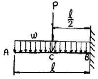
- ℓ(P-ωℓ)
- ℓ/2(P-ωℓ)
- ℓ(P+ωℓ)
- ℓ/2(P+ωℓ)
(정답률: 67%)

2. 길이 3m이고, 지름이 16mm인 원형 단면봉에 30 kN의 축하중을 작용시켰을 때 탄성 신장량 2.2mm가 생겼다. 이 재료의 탄성계수는 약 몇 GPa 인가?
- 203
- 20.3
- 136
- 13.7
(정답률: 63%)
3. 단면계수가 0.01m인 사각형 단면의 양단 고정보가 2m의 길이를 가지고 있다. 중앙에 최대 몇 kN의 집중하중을 가할 수 있는가? (단, 재료의 허용 굽힘응력은 80 MPa이다.)
- 800
- 1600
- 2400
- 3200
(정답률: 39%)
4. 다음과 같은 단면에 대한 2차 모멘트 I는?
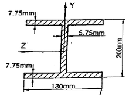
- 18.6×106mm4
- 21.6×106mm4
- 24.6×106mm4
- 27.6×106mm4
(정답률: 63%)
5. 그림과 같이 비틀림 하중을 받고 있는 중공축의 a-a 단면에서 비틀림 모멘트에 의한 최대 전단응력은? (단, 축의 외경은 10cm, 내경은 6cm 이다.)
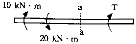
- 25.5 MPa
- 36.5 MPa
- 47.5 MPa
- 58.5 MPa
(정답률: 60%)
6. 지름 10mm이고, 길이가 3m인 원형 축이 716rpm으로 회전하고 있다. 이 축의 허용 전단응력이 160MPa인 경우 전달할 수 있는 최대 동력은 약 몇 kW인가?
- 2.36
- 3.15
- 6.28
- 9.42
(정답률: 60%)
7. 다음 그림과 같은 구조물에서 비틀림각 θ은 약 몇 rad인가? (단, 봉의 전단탄성계수 G=120GPa이다.)
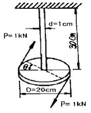
- 0.12
- 0.5
- 0.⑤
- 0.032
(정답률: 54%)
8. 다음과 같은 외팔보에 집중하중과 모멘트가 자유단 B에 작용할 때 B점의 처짐은 몇 mm인가? (단, 굽힘강성 EI=10MN ‧ m2이고, 처짐 δ의 부호가 +이면 위로, -이면 아래로 처짐을 의미한다.)
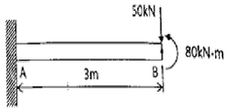
- +81
- -81
- +9
- -9
(정답률: 44%)
9. 단면적이 2cm2이고 길이가 4m인 환봉에 10kN의 축 방향 하중을 가하였다. 이 때 환봉에 발생한 응력은 무엇인가?
- 5000 N/m2
- 2500 N/m2
- 5×107 N/m2
- 5×105 N/m2
(정답률: 66%)
10. 길이 L, 단면 2차 모멘트 I, 탄성 계수 E인 긴 기둥의 좌굴 하중 공식은
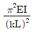
이다. 여기서 의 값은 기둥의지지 조건에 따른 유효 길이 계수라 한다. 양단 고정일 때 k의 값은?- 2
- 1
- 0.7
- 0.5
(정답률: 41%)
11. 일정한 두께를 갖는 반원이 핀에 의해서 A점에서 지지되고 있다. 이 때 B점에서 마찰이 존재하지 않는다고 가정할 때 A점에서의 반력은 무엇인가? (단, 원통 무게는 W, 반지름은 r이며, A, O, B 점은 지구중심방향으로 일직선에 놓여 있다.)
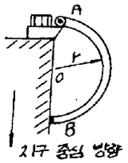
- 1.80 W
- 1.⑤ W
- 0.80 W
- 0.50 W
(정답률: 26%)
12. 원통형 압력용기에 내압 P가 작용할 때, 원통부에 발생하는 축 방향의 변형률 Ex및 원주 방향은 변형률 Ey는? (단, 강판의 두께 t는 원통의 지름 D에 비하여 충분히 작고, 강판 재료의 탄성계수 및 포아송 비는 각각 E,v이다.)
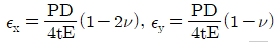
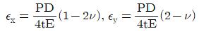
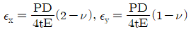
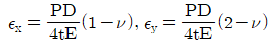
(정답률: 53%)
13. 다음 금속재료의 거동에 대한 일반적인 설명으로 틀린 것은 무엇인가?
- 재료에 가해지는 응력이 일정하더라도 오랜 시간이 경과하면 변형률이 증가할 수 있다.
- 재료의 거동이 탄성한도로 국한된다고 하더라도 반복중이 작용하면 재료의 강도가 저하될 수 있다.
- 일반적으로 크리프는 고온보다 저온상태에서 더 잘 발생한다.
- 응력-변형률 곡선에서 하중을 가할 때와 제거할 때의 경로가 다르게 되는 현상을 히스테리시스라 한다.
(정답률: 67%)
14. 그림과 같은 형태로 분포하중을 받고 있는 단순지지보가 있다. 지지점 A에서의 반력 는 얼마인가? (단, 분포하중
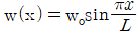
)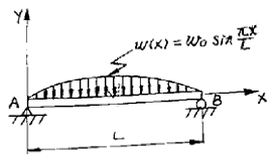
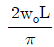
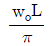
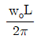
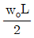
(정답률: 38%)
15. 평균응력 상태에 있는 어떤 재료가 2축 방향에 응력 σx＞σy＞0가 작용하고 있을 때 임의의 경사 단면에 발생하는 법선 응력 σn은 무엇인가?
- σxcos2θ+σysin2θ
- σxsin2θ+σycos2θ
- σxcosθ+σysinθ
- σxcos2θ+σysin2θ
(정답률: 31%)
16. 그림과 같이 서로 다른 2개의 봉에 의하여 AB봉이 수평으로 있다. AB봉을 수평으로 유지하기 위한 하중 P의 작용점의 위치 x의 값은? (단, A단에 연결된 봉의 세로탄성계수는 210GPa, 길이는 3m, 단면적은 2cm2이고, B단에 연결된 봉의 세로탄성계수는 70GPa, 길이는 1.5m, 단면적은 4cm2이며, 봉의 자중은 무시한다.)
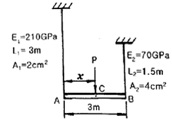
- 144.6 cm
- 171.4 cm
- 191.5 cm
- 213.2 cm
(정답률: 41%)
17. 길이가 L이고 직경이 d인 강봉을 벽 사이에 고정하였다. 그리고 온도를 △T만큼 상승시켰다면 이 때 벽에 작용하는 힘은 어떻게 표현되는가? (단, 강봉의 탄성계수는 E이고, 선팽창계수는 α이다.)
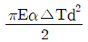
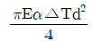
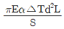
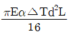
(정답률: 68%)
18. 그림과 같이 사각형 단면을 가진 단순보에서 최대굽힘응력은 약 몇 MPa인가? (단, 보의 굽힘강성은 EI는 일정하다.)
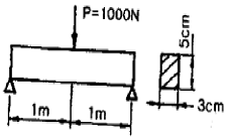
- 80
- 74.5
- 60
- 40
(정답률: 56%)
19. 재료의 허용 전단응력이 150 N/mm2인 보에 굽힘 하중이 작용하여 전단력이 발생한다. 이 보의 단면은 정사각형으로 가로, 세로의 길이가 각각 5mm이다. 단면에 발생하는 최대 전단응력이 허용 전단응력보다 자게 되기 위한 전단력의 최대치는 몇 N인가?
- 2500
- 3000
- 3750
- 5625
(정답률: 44%)
20. 그림과 같이 등분포하중 w가 가해지고 B점에서 지지되어 있는 고정 지지보가 있다. A점에 존재하는 반력 중 모멘트는?
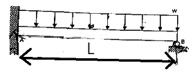
 (시계방향)
(시계방향) (반시계방향)
(반시계방향) (시계방향)
(시계방향) (반시계방향)
(반시계방향)
(정답률: 39%)
2과목: 기계열역학
21. 열병합발전시스템에 대한 설명으로 옳은 것은 무엇인가?
- 증기 동력 시스템에서 전기와 함께 공정용 또는 난방용 스팀을 생산하는 시스템이다.
- 증기 동력 사이클 상부에 고온에서 작용하는 수온 동력 사이클을 결합한 시스템이다.
- 가스 터빈에서 방출되는 폐열을 증기 동력 사이클의 열원으로 사용하는 시스템이다.
- 한 단의 재열사이클과 여러 단의 재생사이클의 복합시스템이다.
(정답률: 42%)
22. 27℃의 물 1kg과 87℃의 물 1 kg이 열의 손실 없이 직접 혼합될 때 생기는 엔트로피의 차는 다음 중 어느 것에 가장 가까운가? (단, 물의 비열인 4.18kJ/kg K로 한다.)
- 0.035 kJ/K
- 1.36 kJ/K
- 4.22 kJ/K
- 5.02 kJ/K
(정답률: 31%)
23. 압력이 일정할 때 공기 5kg을 0℃에서 100℃까지 가열하는데 필요한 열량은 약 몇 kJ인가? (단, 공기비열 Cp(kJ/kg ℃)=1.01+0.000079t(℃)이다.)
- 102
- 476
- 490
- 507
(정답률: 64%)
24. 수은주에 의해 측정된 대기압이 753mmHg일 때 진공도 90%의 절대압력은 얼마인가? (단, 수은의 밀도는 13660 kg/m, 중력가속도는 9.8m/s이다.)
- 약 200.08 kPa
- 약 190.08 kPa
- 약 100.04 kPa
- 약 10.04 kPa
(정답률: 47%)
25. 실린더 내의 유체가 68kJ/kg의 일을 받고 주위에 36 kJ/kg의 열을 방출하였다. 내부에너지의 변화는 무엇인가?
- 32 kJ/kg 증가
- 32 kJ/kg 감소
- 104 kJ/kg 증가
- 104 kJ/kg 감소
(정답률: 54%)
26. 완전히 단열된 실린더 안의 공기가 피스톤을 밀어 외부로 일을 하였다. 이 때 일의 양은? (단, 절대량을 기준으로 한다.)
- 공기의 내부에너지 차
- 공기의 엔탈피 차
- 공기의 엔트로피 차
- 단열되었으므로 일의 수행은 없다.
(정답률: 49%)
27. 어떤 가솔린기관의 실린더 내경이 6.8mc, 행정이 8cm 일 때 평균유효압력 1200 kPa이다. 이 기관의 1행정당 출력(kJ)은?
- 0.04
- 0.14
- 0.35
- 0.44
(정답률: 43%)
28. 시간당 380000kg의 물을 공급하여 수증기를 생산하는 보일러가 있다. 이 보일러에 공급하는 물의 엔탈피는 830 kJ/kg이고, 생산되는 수증기의 엔탈피는 3230 kJ/kg이라고 할 때, 발열량이 32000 kJ/kg인 석탄을 시간당 34000kg씩 보일러에 공급한다면 이 보일러의 효율은 얼마인가?
- 22.6%
- 39.5%
- 72.3%
- 83.8%
(정답률: 54%)
29. 200m의 높이로부터 250kg의 물체가 땅으로 떨어질 경우 일을 열량으로 환산하면 약 몇 kJ인가? (단, 중력가속도는 9.8m/s2이다.)
- 79
- 117
- 203
- 490
(정답률: 64%)
30. 일반적으로 증기압축식 냉동기에서 사용되지 않는 것은 무엇인가?
- 응축기
- 압축기
- 터빈
- 팽창밸브
(정답률: 55%)
31. 경로 함수(path function)인 것은 무엇인가?
- 엔탈피
- 열
- 압력
- 엔트로피
(정답률: 61%)
32. 피스톤이 끼워진 실린더 내에 들어있는 기체가 계로 있다. 이 계에 열이 전달되는 동안 “PV1ㆍ3=일정”하게 압력과 체적의 관계가 유지될 경우 기체의 최초압력 및 체적이 200 kPa 및 0.04m2이였다면 체적이 0.1m3로 되었을 때 계가 한 일(kJ)은?
- 약 4.35
- 약 6.41
- 약 10.56
- 약 12.37
(정답률: 44%)
33. 이상적인 냉동사이클을 따르는 증기압축 냉동장치에서 증발기를 지나는 냉매의 물리적 변화로 옳은 것은 무엇인가?
- 압력이 증가한다.
- 엔트로피가 감소한다.
- 엔탈피가 증가한다.
- 비체적이 감소한다.
(정답률: 43%)
34. 10℃에서 160℃까지의 공기의 평균 정적비열은 0.7315kJ/kg℃이다. 이 온도변화에서 공기 1kg의 내부에너지 변화는 무엇인가?
- 107.1 kJ
- 109.7 kJ
- 120.6 kJ
- 121.7 kJ
(정답률: 68%)
35. 카르노 열기관의 열효율(η)식으로 옳은 것은 무엇인가? (단, 공급열량은 Q1, 방열량은 Q2)
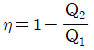
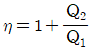
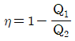
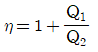
(정답률: 65%)
36. 아래 보기 중 가장 큰 에너지는 무엇인가?
- 100 kW 출력의 엔진이 10시간 동안 한 일
- 발열량 10000 kJ/kg의 연료를 100kg연소시켜 나오는 열량
- 대기압 하에서 10℃ 물 10m3를 90℃로 가열하는데 필요한 열량(물의 비열은 4.2kJ/kg ℃이다.)
- 시속 100 km로 주행하는 총 질량 2000kg인 자동차의 운동에너지
(정답률: 55%)
37. 이상기체의 내부에너지 및 엔탈피는 무엇인가?
- 압력만의 함수이다.
- 체적만의 함수이다.
- 온도만의 함수이다.
- 온도 및 압력의 함수이다.
(정답률: 60%)
38. 액체 상태 물 2kg을 30℃에서 80℃로 가열하였다. 이 과정 동안 물의 엔트로피 변화량을 구하면? (단, 액체 상태 물의 비열은 4.184 kJ/kg K로 일정하다.)
- 0.6391 kJ/K
- 1.278 kJ/K
- 4.100 kJ/K
- 8.208 kJ/K
(정답률: 60%)
39. 이상기체의 비열에 대한 설명으로 옳은 것은 무엇인가?
- 정적비열과 정압비열의 절대값의 차이가 엔탈피이다.
- 비열비는 기체의 종류에 관계없이 일정하다.
- 정압비열은 정적비열보다 크다.
- .일반적으로 압력은 비열보다 온도의 변화에 민감하다.
(정답률: 63%)
40. 과열과 과냉이 없는 증기 압축 냉동 사이클에서 응축온도가 일정할 때 증발온도가 높을수록 성능계수는?
- 증가한다.
- 감소한다.
- 증가할 수도 있고, 감소할 수도 있다.
- 증발온도는 성능계수와 관계없다.
(정답률: 45%)
3과목: 기계유체역학
41. 안지름이 250mm인 원형관 속을 평균속도 1.2m/s로 유체가 흐르고 있다. 흐름 상태가 완전 발달된 층류라면 단면 최대유속은 몇 m/s인가?
- 1.2
- 2.4
- 1.8
- 3.6
(정답률: 57%)
42. 어떤 온도의 공기가 50m/s의 속도로 흐르는 곳에서 정압(static pressure)이 120 kPa이고, 정체압(stagnation pressure)이 121 kPa일 때, 이곳을 흐르는 공기의 온도는 약 몇 ℃인가? (단, 공기의 기체상수는 287 J/kg‧K이다.)
- 249
- 278
- 522
- 556
(정답률: 16%)
43. 2차원 공간에서 속도장이
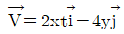
로 주어질 때, 가속도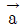
는 어떻게 나타내는가? (여기서, t는 시간을 나타낸다.)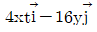
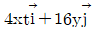
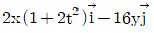
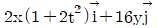
(정답률: 27%)
44. 속도 3m/s로 움직이는 평판에 이것과 같은 방향으로 수직하게 10m/s의 속도를 가진 제트가 충돌한다. 이 제트가 평판에 미치는 힘 F는 얼마인가? (단, 유체의 밀도를 p라 하고 제트의 단면적을 A라 한다.)
- F=10pA
- F=100pA
- F=49pA
- F=7pA
(정답률: 56%)
45. 그림과 같이 안지름이 2m인 원관의 하단에 0.4m/s의 평균속도고 물이 흐를 때 , 체적유량은 약 몇 m/s3인가? (단, 그림에서 θ는 120°이다.)
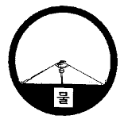
- 0.25
- 0.36
- 0.61
- 0.83
(정답률: 34%)
46. 길이 100m인 배가 10m/s의 속도로 항해한다. 길이 1m인 모형 배를 만들어 조파저항을 측정한 후 원형 배의 조파저항을 구하고자 동일한 조건의 해수에서 실험할 경우 모험 배의 속도를 약 몇 m/s로 하면 되겠는가?
- 1
- 10
- 100
- 200
(정답률: 56%)
47. 한 변의 길이가 3m인 뚜껑이 없는 정육면체 통에 물이 가득 담겨있다. 이 통을 수평방향으로 9.8m/s2으로 잡아끌어 물이 넘쳤을 때, 통에 남아 있는 물의 양은 몇 m3인가?
- 13.5
- 27.0
- 9.0
- 18.5
(정답률: 51%)
48. 폭이 2m, 길이가 3m인 평판이 물속에 수직으로 잠겨있다. 이 평판의 한쪽면에 작용하는 전체 압력에 의한 힘은 약 얼마인지 구하시오.
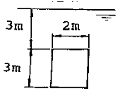
- 88kN
- 176kN
- 265kN
- 353kN
(정답률: 56%)
49. 흐르는 물의 유속을 측정하기 위해 피토정압관을 사용하고 있다. 압력 측정 결과, 전압력수두가 15m이고 정압수두가 7m일 때, 이 위치에서의 유속은 무엇인가?
- 5.91m/s
- 9.75m/s
- 10.58m/s
- 12.5m/s
(정답률: 57%)
50. 지름 D인 구가 V로 흐르는 유체 속에 놓여 있을 때 받는 항력이 F이고, 이 때의 항력계수(drag doefficient)가 4이다. 속도가 2V일 때 받는 항력이 3F라면 이 때의 항력계수는 얼마인가?
- 3
- 4.5
- 8
- 12
(정답률: 51%)
51. 다음 중 2차원 비압축성 유동이 가능한 유동은 어떤 것인지 구하시오. (단, 는 방향 속도 성분이고, 는 방향 속도 성분이다.)
- u=x2-y2,v=-2xy
- u=2x2-y2,v=4xy
- u=x2+3xy,v=-4xy+3y
- u=2x+3xy,v=-4xy+3y
(정답률: 53%)
52. 일반적으로 뉴턴 유체에서 온도 상승에 따른 액체의 점성계수 변화를 가장 바르게 설명한 것은 무엇인가?
- 분자의 무질서한 운동이 커지므로 점성계수가 증가한다.
- 분자의 무질서한 운동이 커지므로 점성계수가 감소한다.
- 분자간의 응집력이 약해지므로 점성계수가 증가한다.
- 분자간의 응집력이 약해지므로 점성계수가 감소한다.
(정답률: 50%)
53. 정리해 있는 평판에 층류가 흐를 때 평판 표면에서 박리(separation)가 일어나기 시작할 조건은? (단, P는 압력, u는 속도, p는 밀도를 나타낸다.)
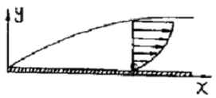
- u=0
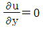
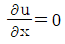
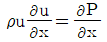
(정답률: 33%)
54. 그림과 같은 펌프를 이용하여 0.2m3/s의 물을 퍼올리고 있다. 흡입부(①)와 배출부(②)의 고도 차이는 3m이고, ①에서의 압력은 -20kPa, ②에서의 압력은 150kPa이다. 펌프의 효율이 70%이면 펌프에 공급해야할 동력(kW)은? (단, 흡입관과 배출관의 지름은 같고 마찰 손실을 무시한다.)
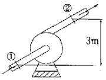
- 34
- 40
- 49
- 57
(정답률: 32%)
55. 수평 원관(圓管)내에서 유체가 완전 발달한 층류 유동할 때의 유량은?
- 압력강하에 반비례한다.
- 관 안지름의 4승에 반비례한다.
- 점성계수에 반비례한다.
- 관의 비례에 비례한다.
(정답률: 60%)
56. 어떤 윤활유의 비중이 0.89이고 점성계수가 0.29kg/m‧s이다. 이 윤활유의 동점성계수는 약 몇 m2/s 인지 구하시오.
- 3.26×10-5
- 3.26×10-4
- 0.258
- 2.581
(정답률: 58%)
57. 다음 그림에서 A점과 B점의 압력차는 약 얼마인지 구하시오. (단, A는 비중 1의 물, B는 비중 0.8899의 벤젠이고, 그 중간에 비중 13.6의 수은이 있다.)
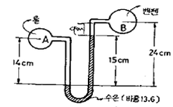
- 22.17 kPa
- 19.4 kPa
- 278.7 kPa
- 191.4 kPa
(정답률: 56%)
58. 지름 2cm인 관에 부착되어 있는 밸브의 부차적 손실계수 K가 5일 때 이것을 관 상당길이로 환산하면 몇 m인가? (단, 관마찰계수 f=0.025 이다.)
- 2
- 2.5
- 4
- 5
(정답률: 54%)
59. Buckingham의 파이(pi)정리를 바르게 설명한 것은 무엇인가? (단, k는 변수의 개수, r은 변수를 표현하는데 필요한 최소한의 기준차원의 개수이다.)
- (k-r)개의 독립적인 무차원수의 관계식으로 만들 수 있다.
- (k+r)개의 독립적인 무차원수의 관계식으로 만들 수 있다.
- (k-r+1)개의 독립적인 무차원수의 관계식으로 만들 수 있다.
- (k+r+1)개의 독립적인 무차원수의 관계식으로 만들 수 있다.
(정답률: 46%)
60. 액체의 표면 장력에 관한 일반적인 설명으로 틀린 것은 무엇인가?
- 표면장력은 온도가 증가하면 감소한다.
- 표면 장력의 단위는 N/m이다.
- 표면 장력은 분자력에 의해 생긴다.
- 구형 액체 방울의 내외부 압력차는
 이다. (단, 여기서 σ는 표면장력이고, R은 반지름이다.)
이다. (단, 여기서 σ는 표면장력이고, R은 반지름이다.)
(정답률: 47%)
4과목: 기계재료 및 유압기기
61. 피아노선의 조직으로 가장 적당한 것은 무엇인가?
- austenite
- ferrite
- sorbite
- martensite
(정답률: 72%)
62. 산화알루미나(Al2O3) 등을 주성분으로 하며 철과 친화력이 없고, 열을 흡수하지 않으므로 공구를 과열시키지 않아 고속 정밀가공에 적합한 공구의 재질은 무엇인가?
- 세라믹
- 인코넬
- 고속도강
- 탄소공구강
(정답률: 68%)
63. 다음 중 불변강의 종류가 아닌 것은 무엇인가?
- 인바
- 코엘린바
- 쾌스테르바
- 엘린바
(정답률: 73%)
64. 편석의 균일화 및 황화물의 편석을 제거하는 열처리 방법으로 가장 적합한 것은 무엇인가?
- 노멀라이징
- 변태점 이하 풀림
- 재결정 풀림
- 확산 풀림
(정답률: 47%)
65. Mo 금속은 어떤 결정격자로 되어 있는가?
- 면심입방격자
- 체심입방격자
- 조밀육방격자
- 정방격자
(정답률: 44%)
66. Fe-C 상태도에서 공석강의 탄소함유량은 약 얼마인가?
- 0.5%
- 0.8%
- 1.0%
- 1.5%
(정답률: 77%)
67. 재료의 표면을 경화시키기 위해 침탄을 하고자 한다. 침탄효과가 가장 좋은 재료는 무엇인가?
- 구상흑연 주철
- Ferrite형 스테인리스강
- 피아노선
- 고탄소강
(정답률: 33%)
68. 특수강에 첨가되는 특수원소의 효과가 아닌 것은 무엇인가?
- Ms.Mf점을 상승시킨다.
- 질량효과를 적게 한다.
- 담금질성을 좋게 한다.
- 상부 임계 냉각속도를 저하시킨다.
(정답률: 38%)
69. 다음 중 Ni-Fe계 합금인 인바(invar)를 바르게 설명한 것은 무엇인가?
- Ni 35~36%, C 0.1~0.3%, Mn 0.4%와 Fe의 합금으로 내식성이 우수하고, 상온부근에서 열팽창계수가 매우 작아 길이측정용 표준자, 시계의 추, 바이메탈 등에 사용된다.
- Ni 50%, Fe 50% 합금으로 초투자율, 포화 자기, 전기 저항이 크므로 저출력 변성기, 저주파 변성기 등의 자심으로 널리 사용된다.
- Ni에 Cr 13~21%, Fe 6.5%를 함유한 강으로 내식성, 내열성 우수하여 다이얼게이지, 유량계 등에 사용된다.
- Ni 40~45%, Mo 1.4%~2.0%에 나머지 Fe의 합금으로 내식성이 우수하여 조선에 사용되는 부품의 재료로 이용된다.
(정답률: 64%)
70. 다음 합금 중 다이캐스팅용 아연합금은 무엇인가?
- Zamak
- Y합금
- RR 50
- Lo-Ex
(정답률: 47%)
71. 유압시스템에서 비압축성 유체를 사용하기 때문에 얻어지는 가장 중요한 특성은 무엇인가?
- 무단변속이 가능하다.
- 운동방향의 전환이 용이하다.
- 과부하에 대한 안전성이 좋다.
- 정확한 위치 및 속도 제어가 가능하다.
(정답률: 61%)
72. 3위치 밸브에서 사용하는 용어로 밸브의 작동신호가 없어질 때 유압배관이 연결되는 밸브 몸체 위치에 해당하는 용어는 무엇인가?
- 초기 위치(Initial position)
- 중앙 위치(Middle position)
- 중간 위치(Intermediate position)
- 과도 위치(Transient position)
(정답률: 46%)
73. 그림과 같은 실린더에서 A측에서 3 MPa의 압력으로 기름을 보낼 때 B측 출구를 막으면 B측에 발생하는 압력 P6는 몇 MPa인가? (단, 실린더 안지름은 50mm, 로드 지름은 25mm이며, 로드에는 부하가 없는 것으로 가정한다.)
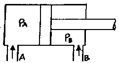
- 1.5
- 3.0
- 4.0
- 6.0
(정답률: 47%)
74. 다음 기호에 대한 명칭은 무엇인가?
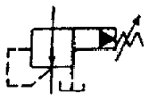
- 비례전자식 릴리프 밸브
- 릴리프붙이 시퀀스 밸브
- 파일럿 작동형 감압 밸브
- 파일러 작동형 릴리프 밸브
(정답률: 48%)
75. 분말 성형프레스에서 유압을 한층 더 증대시키는 작용을 하는 장치는?
- 유압 부스터(hydruaulic booster)
- 유압 컨버터(hydraulic converter)
- 유니버셜 조인트(universal joint)
- 유압 피트먼 암(hydraulic pitman arm)
(정답률: 75%)
76. 다음 중 실린더에 배압이 걸리므로 끌어당기는 힘이 작용해도 자주(自走)할 염려가 없어서 밀링이나 보링머신 등에 사용하는 회로는?
- 미터 인 회로
- 어큐물레이터 회로
- 미터 아웃 회로
- 싱크로나이즈 회로
(정답률: 45%)
77. 그림의 회로가 가진 특징에 대한 설명으로 옳은 것은 무엇인가?
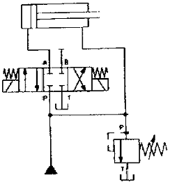
- 전진운동시 속도는 느려진다.
- 후진운동시 속도가 빨라진다.
- 전진운동시 작용력은 작아진다.
- 밸브의 작동시 한 가지 속도만 가능하다.
(정답률: 31%)
78. 그림은 유압모터를 이용한 수동 유압 윈치의 회로이다. 이 회로의 명칭은 무엇인가?
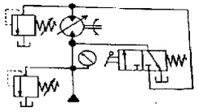
- 직렬 배치 회로
- 탠덤형 배치 회로
- 병렬 배치 회로
- 정출력 구동 회로
(정답률: 27%)
79. 실(seal)의 구비조건으로 옳지 않은 것은 무엇인가?
- 마찰계수가 커야 한다.
- 내유성이 좋아야 한다.
- 내마모성이 우수해야 한다.
- 복원성이 양호하고 압축변형이 작아야 한다.
(정답률: 66%)
80. 유압 작동유에 수분이 많이 혼입되었을 때 발생되는 현상으로 옳지 않은 것은 무엇인가?
- 윤활작용이 저하된다.
- 산화촉진을 막아준다.
- 작동유의 방청성을 저하시킨다.
- 유압펌프의 캐비테이션 발생 원인이 된다.
(정답률: 73%)
5과목: 기계제작법 및 기계동력학
81. 선반에서 절삭속도 120m/min, 이송속도 0.25mm/rev로 지름 80mm의 환봉을 선삭하려고 할 때 500mm 길이를 1회 선삭 하는데 필요한 가공시간은?
- 약 1.5분
- 약 4.2분
- 약 7.3분
- 약 10.1분
(정답률: 45%)
82. 다음 중 화학적 가공공정 순서가 올바른 것은 무엇인가?
- 청정-마스킹(masking)-에칭(etching)-피막제거-수세
- 청정-수세-마스킹(masking)-피막제거-에칭(etching)
- 마스킹(masking)-에칭(etching)-피막제거-청정-수세
- 에칭(etching)-마스킹(masking)-청정-피막제거-수세
(정답률: 50%)
83. 전단가공의 종류에 해당하지 않는 것은 무엇인가?
- 비딩(beading)
- 펀칭(punching)
- 트리밍(trimming)
- 블랭킹(blanking)
(정답률: 54%)
84. 숏피닝(shot peening)에 대한 설명으로 틀린 것은 무엇인가?(오류 신고가 접수된 문제입니다. 반드시 정답과 해설을 확인하시기 바랍니다.)
- 숏피닝은 두꺼운 공작물일수록 효과가 크다.
- 가공물 표면에 작은 헤머와 같은 작용을 하는 형태로 일종의 열간 가공법이다.
- 가공물 표면에 가공경화된 압축잔류응력층이 형성된다.
- 반복하중에 대한 피로한도를 증가시킬 수 있어서 각종 스프링에 널리 이용되고 있다.
(정답률: 44%)
85. 압연가공에서 압하율을 나타낸 공식은 무엇인가? (단, Ho는 압연전의 두께, H1은 압연후의 두께이다.)
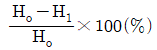
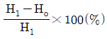
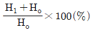
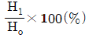
(정답률: 71%)
86. 사형(砂型)과 금속형(金屬型)을 사용하여 내마모성이 큰 주물을 제작할 때 표면은 백주철이 되고 내부는 회주철이 되는 주조 방법은 무엇인가?
- 다이캐스팅
- 원심주조법
- 칠드주조법
- 셀주조법
(정답률: 62%)
87. 절삭 바이트에서 마찰력의 결정에 영향을 미치는 요인이 아닌 것은 무엇인가?
- 공구의 형상
- 절삭속도
- 공구의 재질
- 모터 동력
(정답률: 53%)
88. 저온 뜨임을 설명한 것 중 틀린 것은 무엇인가?
- 담금질에 의한 응력 제거
- 치수의 경년 변화 방지
- 연마군열 생성
- 내마모성 향상
(정답률: 55%)
89. 산소-아세틸렌 가스용접에서 표준불꽃(중성불꽃)의 화학반응식은 무엇인가?
- H2+(1/2O2)→H2O
- C2H2+O2→2CO+H2
- 2CO+O2→2CO2
- CaC2+2H2O→C2H2+Ca(OH)2
(정답률: 52%)
90. 봉재의 지름이나 판재의 두께를 측정하는 게이지는?
- 와이어 게이지(wire gauge)
- 틈새게이지(thickness gauge)
- 반지름 게이지(radius gauge)
- 센터 게이지(center gauge)
(정답률: 48%)
91. 6kg의 물체 A가 마찰이 없는 표면 위를 정지 상태에서 미끄러져 내려가 정지하고 있던 4kg 의 물체 B와 충돌한 후 두 물체가 붙어서 함께 움직였다. 이 때의 속도는 몇 m/s인가? (단, 두 물체 사이의 수직 방향 거리 차이는 5m이고 중력가속도는 10m/s2로 본다.)
- 3
- 4
- 5
- 6
(정답률: 38%)
92. 질량이 50kg이고 반경이 2m인 원판의 중심에 1000N의 힘이 그림과 같이 작용하여 수평선 위를 구르고 있다. 미끄럼이 없이 굴러간다고 가정할 때 각기속도는 얼마인가?
- 3.34 rad/s2
- 4.91 rad/s2
- 6.67 rad/s2
- 10 rad/s2
(정답률: 29%)
93. 회전속도가 2000rpm인 원심 팬이 있다. 방진고무로 비감쇠 탄성 지지시켜 진동 전달율을 0.3으로 하고자 할 때, 이 팬의 고유진동수는 약 몇 Hz인가?
- 26
- 12
- 16
- 24
(정답률: 32%)
94. 외력이 없는 다음과 같은 계의 운동방정식은 어느 것인가?
- mx+cx+kx=0
- ms+cx+k=0
- cs+kx+mx=0
- cx+kx+m=0
(정답률: 54%)
95. 물방울이 떨어지기 시작하여 3초 후의 속도는 약 몇 m/s인가? (단, 공기의 저항은 무시하고, 초기속도는 0으로 한다.)
- 3
- 9.8
- 19.6
- 29.4
(정답률: 58%)
96. 그림과 같이 질량 1kg인 블록이 궤도를 마찰없이 움직일 때 A점에서 표면과 접촉을 유지하면서 통과할 수 있는 A지점에서의 블록의 최대 속도 v는 몇 m/s 인가? (단, A점의 곡률반경(p)은 10m, 중력가속도(g)는 10m/s2로 본다.)
- 100
- 10000
- 0.01
- 10
(정답률: 34%)
97. 직선 진동계에서 질량 98kg의 물체가 16초간에 10회 진동하였다. 이 진동계의 스프링 상수는 몇 N/cm인가?
- 37.8
- 15.1
- 22.7
- 30.2
(정답률: 39%)
98. 작은 공이 그림과 같이 수평면에 비스듬히 충돌 할 경우 튕겨져 나갔을 경우의 설명으로 틀린 것은 무엇인가? (단, 공과 수평면 사이의 마찰, 그리고 공의 회전은 무시하며 반발계수는 1이다.)
- 충돌 직전 직후 공의 운동량은 같다.
- 충돌 직전 직후에 공의 운동에너지는 보존된다.
- 충돌과정에서 공이 받은 충격량과 수평면이 받은 충격량의 크기는 같다.
- 공의 운동방향이 수평면과 이루는 각의 크기는 충돌 직전과 직후가 같다.
(정답률: 40%)
99. 질량 m, 반경 r인 균질한 구(球)의 질량중심을 지나는 축에 대한 관성모멘트는?
- (2/5)mr2
- (1/3)mr2
- (1/2)mr2
- (2/3)mr2
(정답률: 43%)
100. 고유 진동수 f(Hz), 고유 원진동수 ω(rad/s), 고유 주기 T(s)사이의 관계를 바르게 나타낸 식은 무엇인가?
- T=ω/2π
- Tf=1
- Tω=f
- fω=2π
(정답률: 61%)